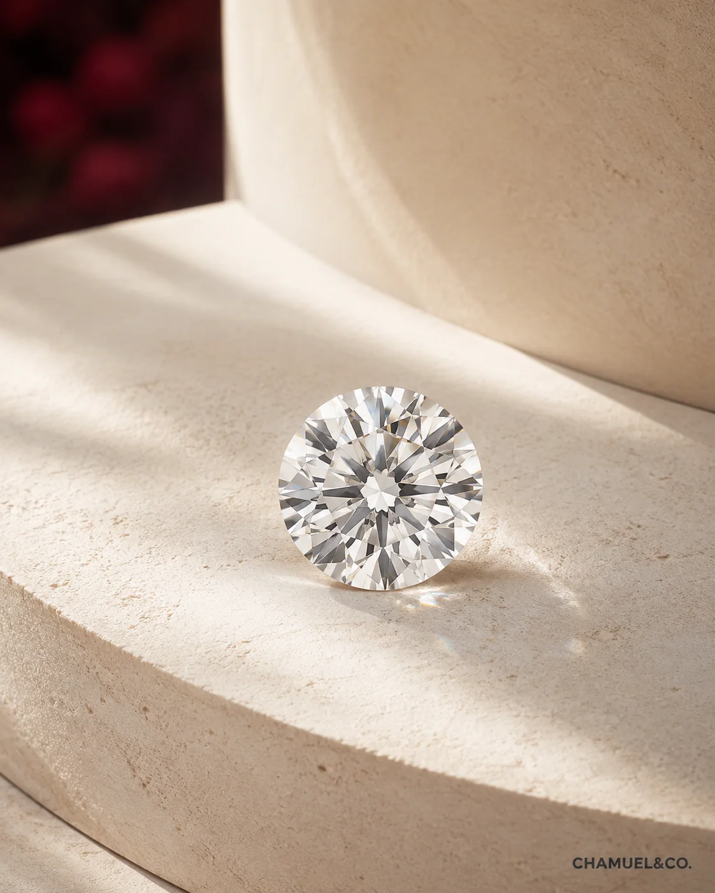
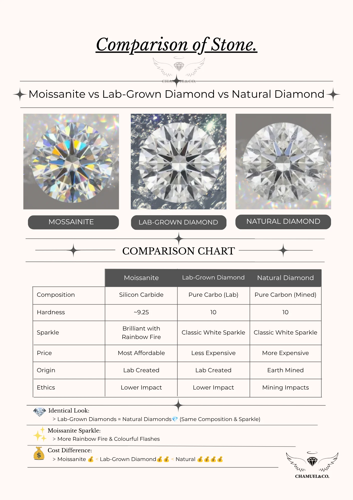
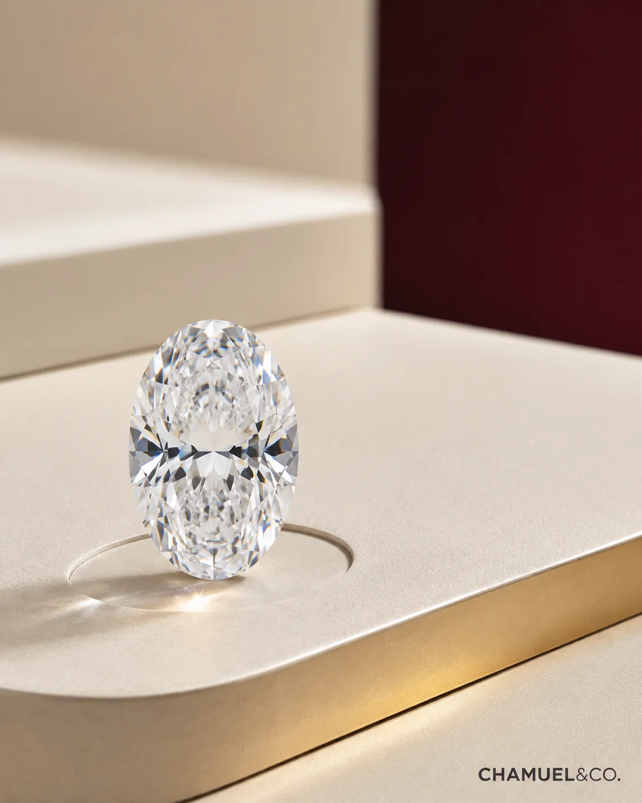
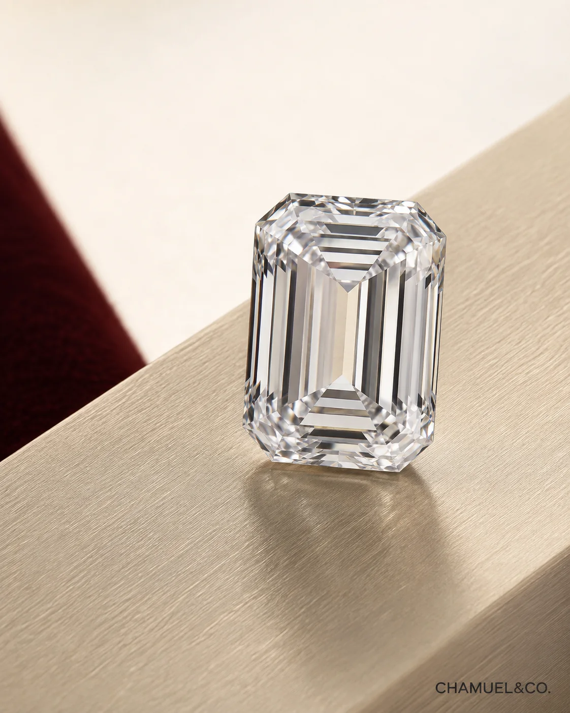
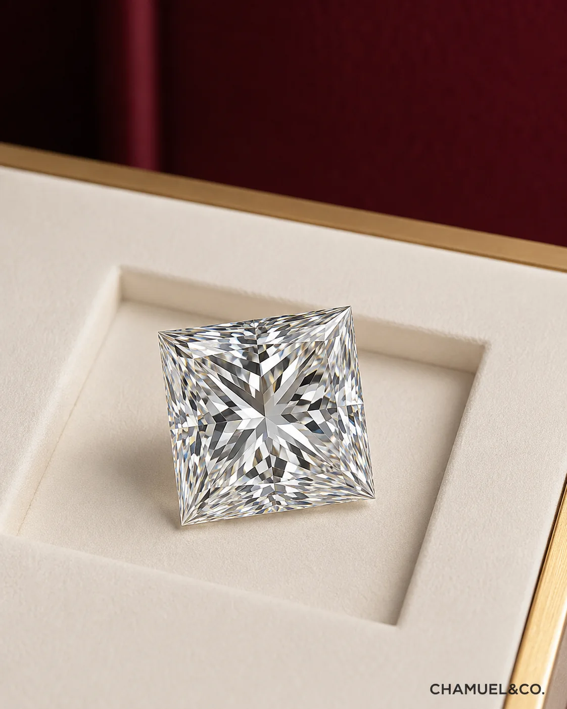
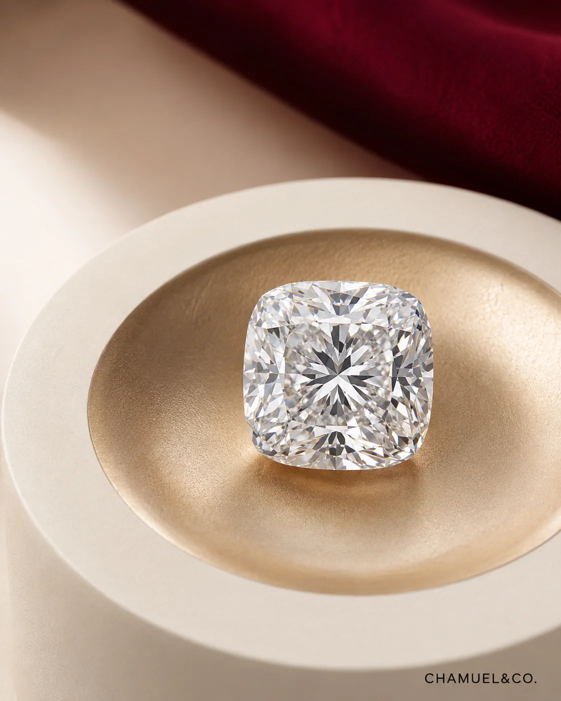
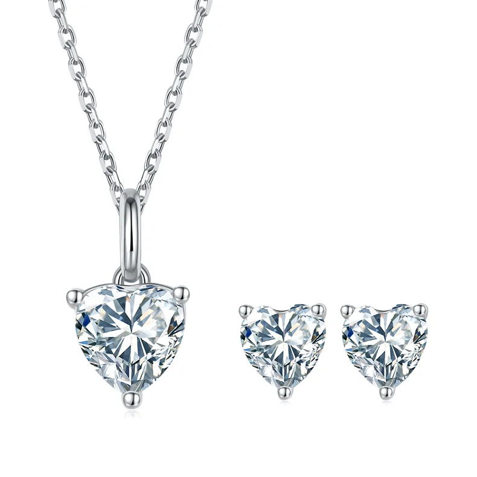

Round
Classic and brilliant
Timeless balanced and easy to match with almost any setting
Compare stone type, shape and budget direction in a simpler way so you can choose with more confidence.
We keep the language simple so customers understand the buying decision before price discussion.
Best for customers who want diamond look, larger size and better budget efficiency. Suitable for proposal rings and statement jewelry.
Best for customers who value natural origin, long-term symbolism and traditional fine jewelry positioning.
Best for customers who want sparkle and a friendly entry price. Suitable for first ring, daily jewelry and budget-conscious gifts.
Before asking for price, understand what you are comparing: composition, sparkle, origin and value.

The same carat weight can feel very different depending on shape Use these visual references before choosing your setting

Timeless balanced and easy to match with almost any setting

Creates a longer visual line on the finger with a soft outline

Step cut reflections give a calmer sophisticated look

A square silhouette with strong geometric character

Rounded corners balance vintage softness with modern sparkle

A meaningful shape for customers who want the stone itself to carry a love message
Enter RM300 and above to see a practical starting point based on your budget. Final quotation depends on design, stone, size and material weight.
Diamond buying should be clear: size, quality, origin, setting, daily wear and budget all matter.